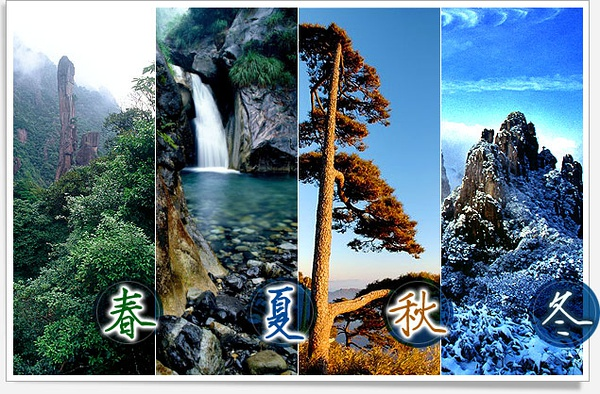
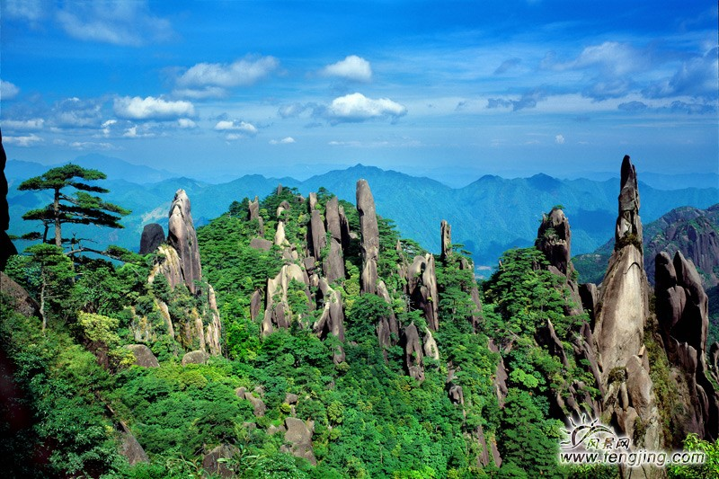
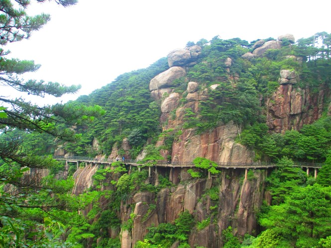
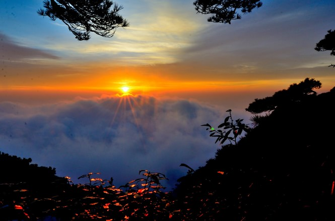
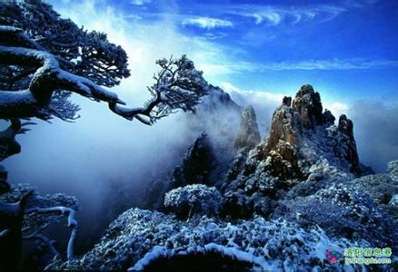

旅游日记--记祖国的大好河山--三清山
若想此生不枉此行，请先清楚该往哪儿走，怎么走，那种完整，怎样完整？
若想清楚了，那还等什么等？前途风光正好，追风赶月莫停留

三清山的四季从春至冬，都有着不同一般的迷人景色

- 盼望着，盼望着，春天的脚步近了，甩掉冬日的厚棉袄厚衣库，一身轻松地去爬山涉水吧！你看，春天的三清山早已萌发春的气息，散发春的魅力，开始苍翠欲滴起来。
 一切都像刚睡醒的样子，欣欣然张开了眼。三清山渐渐朗润起来了，太阳的脸红起来了.三清山的小草偷偷地从土里钻出来，嫩嫩的，绿绿的。瞧去，一大片一大片的，草软绵绵的。三清山各种花开，你不让我，我不让你，都开满了花赶趟儿。有名字的，没名字的，散在草丛里，像眼睛，像星星，还眨呀眨的。花里带着甜味儿；三清山的鸟儿将巢安在繁花嫩叶当中，高兴起来了，呼朋引伴地卖弄清脆的喉咙，唱出宛转的曲子，跟轻风流水应和着。雨是最寻常的，不过三清山的雨可不一般。像牛毛，像花针，像细丝，密密地斜织着，你看，山里还有一层层薄烟缭绕，雨后说不定还有彩虹呢，这就是三清山春季特有的韵味。 三清山的春天就是这么与众不同，像刚落地的娃娃，从头到脚都是新的，它生长着。春天像小姑娘，花枝招展的，笑着，走着。
- 夏季是三清山旅游旺季，是三清山最美的季节，三清山景色非常不错，登险峰、探幽谷、看云海、赏杜鹃、观飞瀑、逛氧吧，所以这时来三清山是最为适宜的。因为三清山有东部和南部两个景区入口，线路相同，方向不一样而已。（1）到三清山东部，晚上入住东部山下酒店。第二天：东部索道上山，30分钟后到巨蟒峰→往右禹皇顶→阳光海岸景区→三清宫景区→西海岸景区→南清园景区（日上山庄→一线天→玉女开怀→玉台→杜鹃林→女神峰）→返回东部索道下山。(2)从南部索道上，第一天，晚上入住南部山下酒店。第二天：南部索道上山，20-30分钟后到日上山庄→南清园景区→左上西海岸景区→三清宫景区→阳光海岸景区→南清园景区→返回南部索道
- 秋日登高赏叶，是秋游最大的主题。国内名山大川都被视为登高赏秋的胜地，被誉为“天下第一奇山”的三清山，更成为众多游客秋日出游的上佳选择，让您省心出行，感受如童话般的秋日三清山！ 临近深秋，三清山秋色愈浓，令人沉醉。只见巍峨壮美的群峰之上，苍松挺立，巨石嶙峋。漫山秋叶，在蓝天白云的映衬下，更是绚烂多彩。秋叶与奇松、怪石相映成趣，山峦起伏，红叶似火。静谧的山间，云雾缭绕，缤纷落叶如彩蝶一般轻轻飘荡在云端。落满秋叶的山道，犹如铺上了一片金红的地毯，偶有俏皮的小松鼠，如精灵一般从落叶中跳过，忽地又爬上枝头，隐没在醉人的秋色之中。秋染三清山，每一处风景都妙不可言，真可谓“揽胜遍五岳，绝景在三清”
- 四季三清山皆美景，唯有腊冬景更佳”。素有“天下第一仙山”之誉的三清山属亚热带湿润气候，夏无酷暑，是一处全天候、四季可看的理想景观，尤以冬季景观更为奇特，它是继奇松、怪石、云海、佛光之后的三清山第五绝，是一道独具魅力的旅游风景。
 三清山的冰，千姿百态。泉有多宽，冰就有多宽；瀑有多高，冰就有多高；三清山冰景中最有名气的是“雾淞”。当气温降到零下时，浓重的雾气凝结在树木、石块、草丛等物体上，立即冻结成了白色固体冰晶。当“雾淞”出现时，整个三清山变成了一座冰山，棵棵树木变成了丛丛珊瑚，真是奇松佩玉，怪石披银，山峰闪光，花草晶莹。微风拂来，树动枝摇，冰挂荡漾，叮叮当当，在山谷中不停地回响，有如大珠小珠落玉盘般清脆响亮。云海也是冬游三清山的一大奇观。三清山冬天的云海比平时显得更加奇绝壮观。如果遇到晴天，风小，云海比较稳定，有时能持续长达三天之久。三清山云海的种类很多，有风平浪静，云絮漫漫的层积云；有虚无飘缈，时隐时现的薄纱云；有苍苍茫茫，一铺万顷的平铺云；有峰起云涌，浪花飞浅的瀑布云……冬天更是观看三清山日出的好时机。冬天的早晨，红日东升，霞光万道，照射在云海之上，色彩斑阑，华光绚丽，涌金流银，形成三清山奇妙的霞铺云奇景。冬雪的三清山，一个令无数游人永远魂牵梦萦的“银梦仙境”。